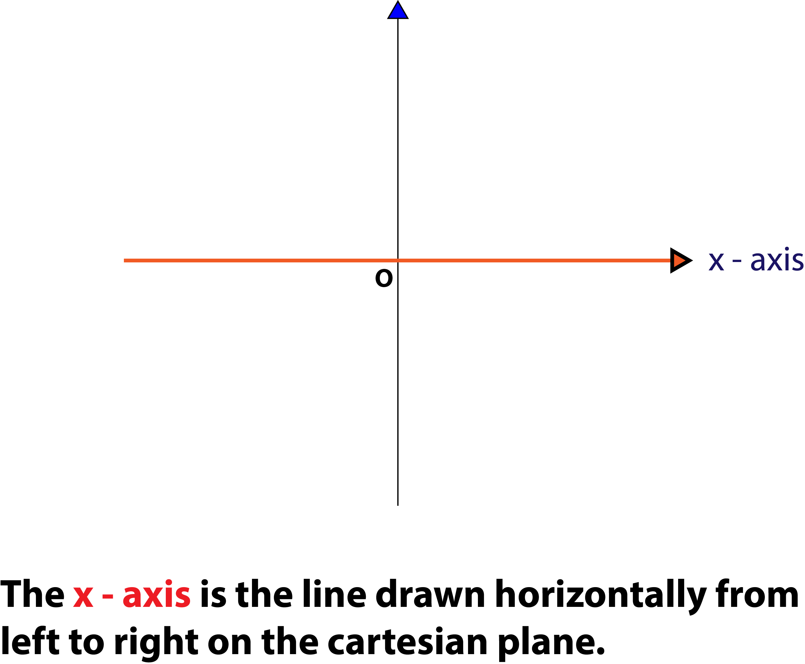
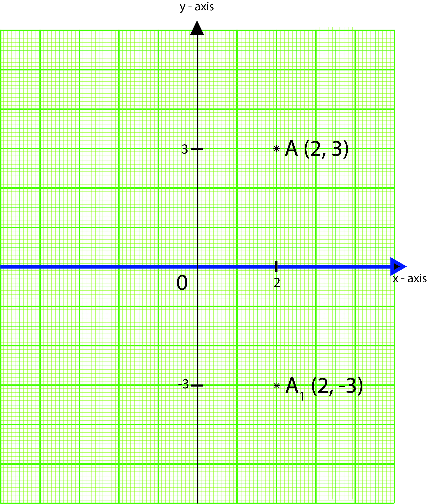
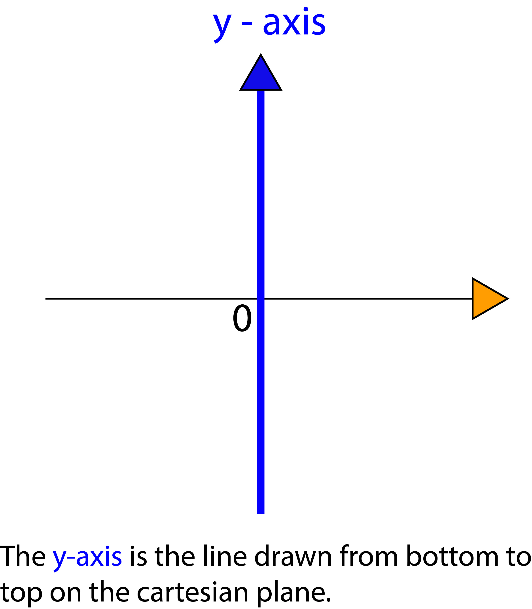
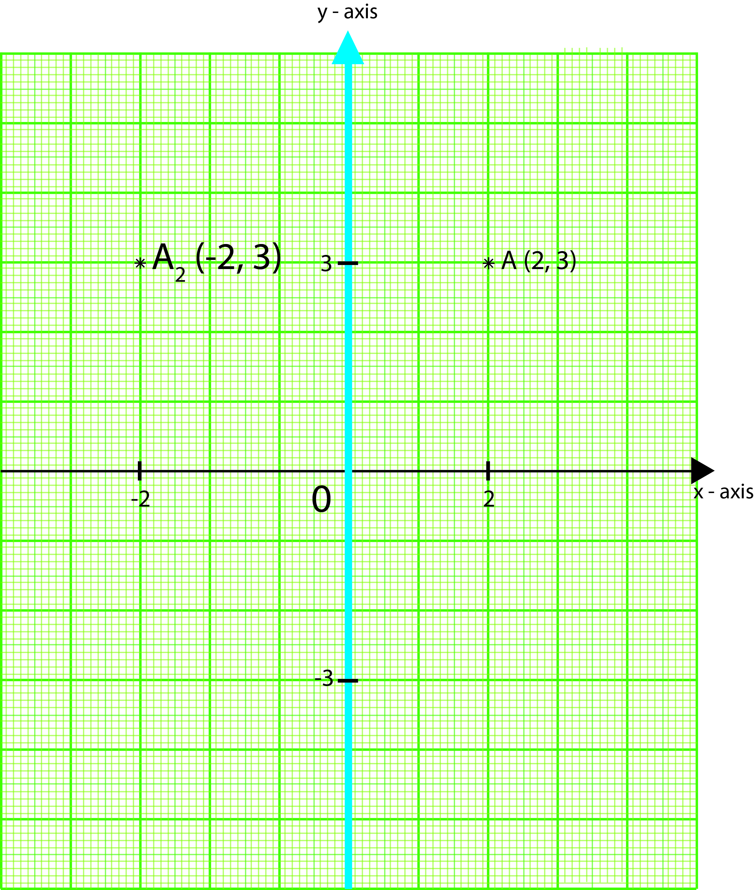
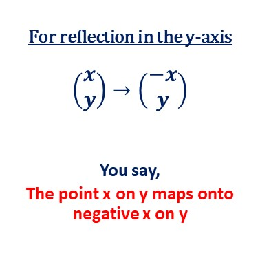

Reflection in the x-axis
The x-axis is the horizontal line you draw on the coordinate plane, that is the line drawn from left to right on the cartesian plane.

Reflection in the x-axis means using the x-axis as our mirror line. Since the x-axis passes through the point 0 (zero) on the y-axis, we sometimes call the x-axis, the line y = 0.
When we use the x-axis as a mirror line, the image point or shape will fall at the top or bottom of the x-axis, depending on where the object lies in the cartesian plane.
Consider the point A below.
When the x-axis is used as the mirror, or when reflection is performed using the the line y = 0, the image point becomes A1 (2, -3).

You can see from the illustration above that the x-component of the point (the number 2) remained positive (2), while the y-component of the point (the number 3), changed to a negative number (-3).
We can therefore say that,

You can use the formula above when performing a reflection in the x-axis, or in the line y = 0.
Reflection in the y-axis
The y-axis is the vertical line you draw on the coordinate plane, that is, the line drawn from bottom to top on the cartesian plane.

Reflection in the y-axis means using the y-axis as our mirror line. Since the y-axis passes through the point 0 (zero) on the x-axis, we sometimes call the y-axis the line x = 0.
When we use the y-axis as a mirror line, the image point or shape will fall at the left or right of the y-axis, depending on where the object point or shape lies on the cartesian plane.
Consider the point A2 below.
When the y-axis is used as the mirror, or when reflection is performed using the the line x = 0, the image point becomes A1 (-2, 3).

You can see from the illustration above that the x-component of the point (the number 2) changed to a negative number (-2), while the y-component (the number 3) remained positive.
We can therefore say that,

You can use the formula above when performing a reflection in the y-axis, or in the line x = 0.
Reflection in the line y = x
Kindly check back later for the lesson on this topic, as our website is still in the process of being built. Thank you.
Reflection in the line y = - x
Kindly check back later for the lesson on this topic, as our website is still in the process of being built. Thank you.
Reflection through lines parallel to the x-axis
Kindly check back later for the lesson on this topic, as our website is still in the process of being built. Thank you.
Reflection through lines parallel to the y-axis
Kindly check back later for the lesson on this topic, as our website is still in the process of being built. Thank you.